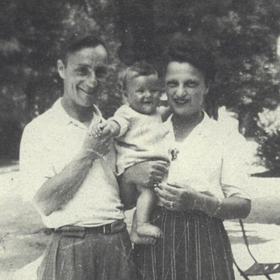

Portrait d’archive
Claude Gisèle Perloff
Claude Gisèle PERLOFF
Claude Gisèle PERLOFF est née le 07/11/1942 à Lyon en France.
Rassemblé à Lyon, il est déporté à Auschwitz le 27/03/1944 par le convoi n°70. Il est mort en déportation.
Dernière adresse connue : 21, rue Emile Zola 69002 (Lyon)
Nom : PERLOFF
Prénom(s) : Claude, Gisèle
Date naissance : 07/11/1942
Âge (ans) : 1
Lieu naissance : Lyon
Pays ou département : Rhône
Lieu rassemblement : Lyon
Dernière adresse : 21, rue Emile Zola
Ville : Lyon
Code postal : 69002
N° Convoi : 70
Date déportation : 27/03/1944
Informations diverses : Internée à l’Hôpital de l’ Antiquaille à Lyon le 20/09/1944. Déporté avec son père Jacques (20/05/1908, Paris), sa mère Marie née Marcovici (02/08/1911, Paris), Boris (25/01/1909, Odessa) habitant 29, Rue Godefroy, Lyon et Michel (27/04/1907, Odessa), habitant 36, Cours Morand, Lyon.
Perloff (Claude, Gisèle), née le 7 novembre 1942 à Lyon 4e (Rhône), décédée le 1er avril 1944 à Auschwitz (Pologne). JO
Perloff (Jacques), né le 20 mai 1908 à Paris 18e (Seine), décédé le 1er avril 1944 à Auschwitz (Pologne). Perloff, née Marcovici (Marie) le 2 août 1911 à Paris 15e (Seine), décédée le 1er avril 1944 à Auschwitz (Pologne).
Lieu de déportation : Auschwitz
Lieu de départ : Drancy
Nombre total de déporté·e·s du convoi : 1000
Gazé·e·s à l'arrivée : 480 (48 %)
Survivant·e·s en 1945 : 152 (15,2 %)